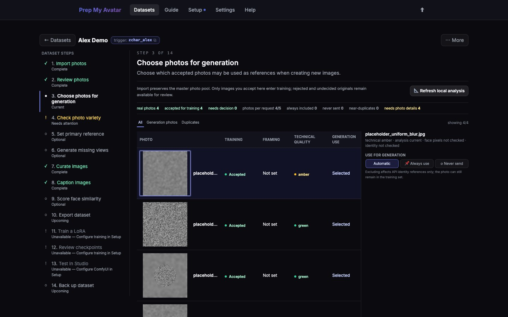

First run · 10 of 21
Step 10: Choose photos for generation
Anchors are the small set of reviewed photos that a remote image provider may receive with a generation request. They help generated candidates keep the correct identity.
This is a Character-only step. It controls which reviewed photos a remote image provider may receive when creating a new image. Concept and Style datasets do not need these controls.

Before you begin
Use only accepted, identity-accurate Character photos. Each selected photo should have a clear face, useful detail, and a viewpoint that adds something different from the others.
Do this
- Open Choose photos for generation in the dataset step navigator. Its URL ends in
/anchors. - Filter to accepted images if necessary.
- Leave strong ordinary candidates on Automatic so the app can choose a limited set for each request.
- Select 📌 Always use for a small number of identity-critical photos that must always be considered.
- Select ⊘ Never send for any photo that must never be sent to a remote provider. This does not remove it from local training.
- Avoid always including several near-identical photos; varied angles provide better evidence.
- Check the photos per request and always included counts, then select Continue to Check photo variety.
If you use only local tools or never generate images, you may leave every accepted image on Automatic.
You are finished when
For Character, the summary shows the expected automatic or always-included selection, every photo you do not consent to send is marked Never send, and the step navigator marks Choose photos for generation — Complete. Concept and Style navigators omit this page.